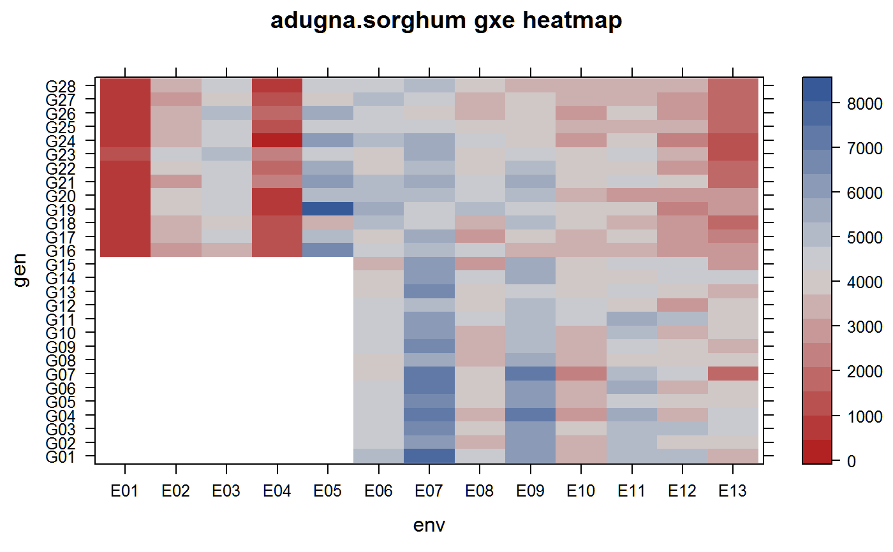

adugna.sorghum.RdMulti-environment trial of sorghum at 3 locations across 5 years
A data frame with 289 observations on the following 6 variables.
gengenotype, 28 levels
trialtrial, 2 levels
envenvironment, 13 levels
yieldyield kg/ha
yearyear, 2001-2005
loclocation, 3 levels
Sorghum yields at 3 locations across 5 years. The trials were carried out at three locations in dry, hot lowlands of Ethiopia:
Melkassa (39 deg 21 min E, 8 deg 24 min N)
Mieso (39 deg 22 min E, 8 deg 41 min N)
Kobo (39 deg 37 min E, 12 deg 09 min N)
Trial 1 was 14 hybrids and one open-pollinated variety.
Trial 2 was 12 experimental lines.
Used with permission of Asfaw Adugna.
Asfaw Adugna (2008). Assessment of yield stability in sorghum using univariate and multivariate statistical approaches. Hereditas, 145, 28--37. https://doi.org/10.1111/j.0018-0661.2008.2023.x
# \dontrun{ library(agridat) data(adugna.sorghum) dat <- adugna.sorghum libs(lattice) redblue <- colorRampPalette(c("firebrick", "lightgray", "#375997")) levelplot(yield ~ env*gen, data=dat, main="adugna.sorghum gxe heatmap", col.regions=redblue)#> G01 G02 G03 G04 G05 G06 G07 G08 #> 5080.125 4672.875 5043.500 4842.000 4704.250 4769.500 4523.625 4142.625 #> G09 G10 G11 G12 G13 G14 G15 G16 #> 4443.500 4377.250 4950.125 4306.625 4390.625 4635.625 4285.000 3396.692 #> G17 G18 G19 G20 G21 G22 G23 G24 #> 3392.154 3279.231 3833.154 3569.769 3968.538 3556.308 3758.538 3421.077 #> G25 G26 G27 G28 #> 3383.308 3323.077 3171.000 3312.154# CV for each genotype. G1..G15 match, except for G2. # The table in Adugna scrambles the means for G16..G28 libs(reshape2) mat <- acast(dat, gen~env, value.var='yield') round(sqrt(apply(mat, 1, var, na.rm=TRUE)) / apply(mat, 1, mean, na.rm=TRUE) * 100,2)#> G01 G02 G03 G04 G05 G06 G07 G08 G09 G10 G11 G12 G13 #> 26.45 24.89 18.68 36.45 22.18 30.47 43.32 21.42 26.02 21.38 13.36 15.44 23.54 #> G14 G15 G16 G17 G18 G19 G20 G21 G22 G23 G24 G25 G26 #> 18.05 26.87 43.77 40.23 42.02 51.50 43.33 40.99 42.73 36.48 54.29 39.62 39.96 #> G27 G28 #> 39.51 42.60# Shukla stability. G1..G15 match Adugna. Can't match G16..G28. dat1 <- droplevels(subset(dat, trial=="T1")) mat1 <- acast(dat1, gen~env, value.var='yield') w <- mat1; k=15; n=8 # k=p gen, n=q env w <- sweep(w, 1, rowMeans(mat1, na.rm=TRUE)) w <- sweep(w, 2, colMeans(mat1, na.rm=TRUE)) w <- w + mean(mat1, na.rm=TRUE) w <- rowSums(w^2, na.rm=TRUE) sig2 <- k*w/((k-2)*(n-1)) - sum(w)/((k-1)*(k-2)*(n-1)) round(sig2/10000,1) # Genotypes in T1 are divided by 10000#> G01 G02 G03 G04 G05 G06 G07 G08 G09 G10 G11 G12 G13 #> 15.6 7.0 9.2 74.2 3.6 28.3 133.5 9.6 14.2 9.7 44.9 67.9 23.0 #> G14 G15 #> 28.3 20.2# }